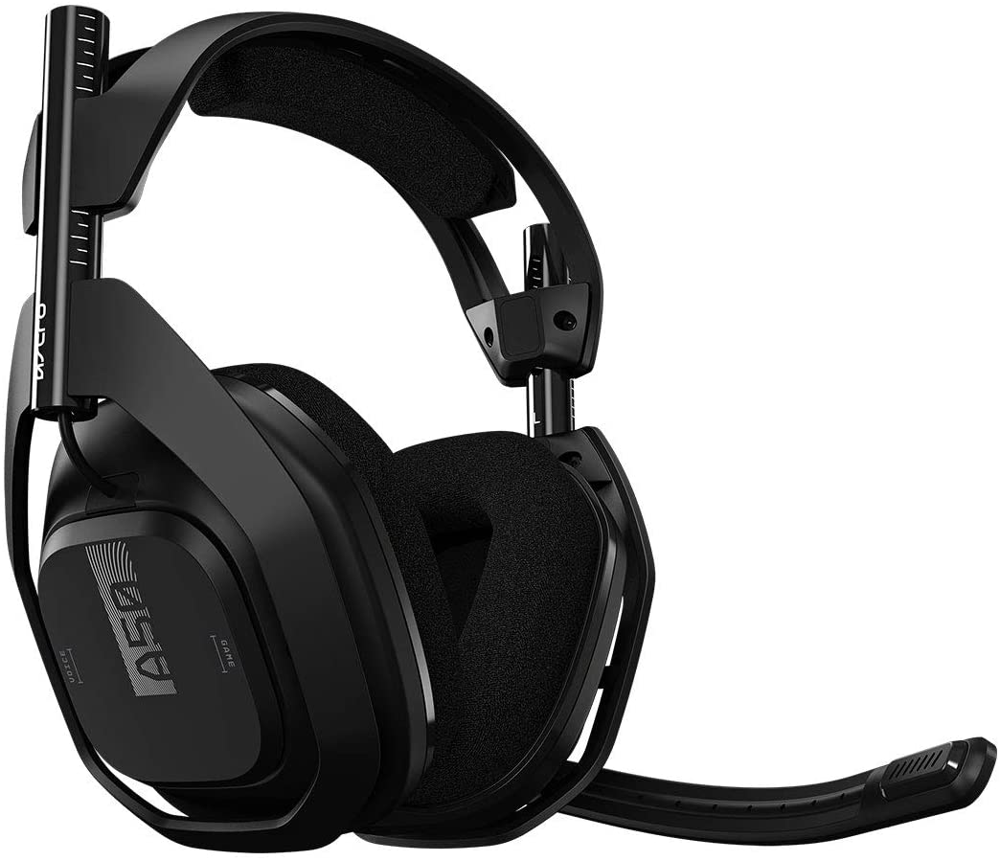

Disfruta del desempeño y el sonido de ASTRO Audio V2, y de la libertad sin cables. Los audífonos inalámbricos A50 + Estación base para Xbox/PC ofrecen la acústica, la ergonomía, el confort y la durabilidad premium que exigen jugadores y streamers. Disfruta de la más absoluta inmersión en audio con los audífonos inalámbricos ASTRO A50 + Estación base.
Todos los productos de ASTRO Gaming diseñados para Xbox ofrecen compatibilidad continua con Xbox: Serie X|S.
|
|
ESPECIFICACIONES PRINCIPALES
|
|
| Duración de las baterías: 15+ horas | Duración de la batería en espera: ~20 meses | Tipo de baterías: polímero de litio, de una célula |
| Número de baterías: 1 | Peso de la batería: 17 g | Potencia de la batería: 3,7 Wh |
| Radio de acción inalámbrico: 15 m | Frecuencia inalámbrica: 2,4GHz | Transductores de altavoces de 40 mm |
| Respuesta de frecuencia: 20 - 20.000 Hz | Micrófono de varilla: Unidireccional de 6,0 mm | Entrada de puerto de carga micro USB 5 V 500 mA |
| Entrada 5 V 500 mA | Salida en puerto de carga 5 V, 200 mA | Puertos: micro USB - datos y alimentación |
| Puerto de carga USB - sólo alimentación | Puerto auxiliar (entrada/salida) | Entrada óptica/Salida óptica (paso) |
|
ESPECIFICACIONES FISICAS:
|
| Audífonos con micrófono: |
| Longitud 18,5 cm |
| Altura 18,22 cm |
| Anchura 8,84 cm |
| Peso 370 g |
|
REQUISITOS:
|
| PlayStation® 4, con un puerto óptico y un puerto USB libre |
| PC con puerto USB 2.0, Windows 7 o posteriores, o MAC OS X o posteriores |
|
|
ESPECIFICACIONES PRINCIPALES
|
|
| Fuente de alimentación: USB micro B (compatible con USB 2.0) | Tecnología inalámbrica: 15 m | Entradas y salidas: Paso de audio óptico, alimentación USB y tarjeta de sonido, puerto de carga USB, entrada AUX/salida de micrófono (TRRS, 3,5 mm) |
|
REQUISITOS
|
| Windows® 8.1 |
| Windows 8 |
| Windows 7 |
|
ESPECIFICACIONES FISICAS
|
| Peso sin cable: 317 g |
| Dimensiones: 21.6 cm/10.8 cm/3 cm |
|
ESPECIFICACIONES TECNICAS
|
| Salida: 5,0 V, 180 mA |